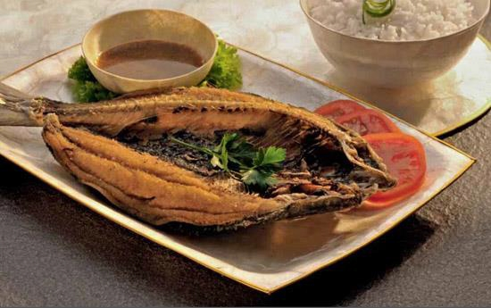

| Home | Desserts | Beverages | Dishes | Author | Credits |


Noodle Soup with All the Trimmings
( Batchoy )
Ingredients:
- 8 cups (2 liters) water
- 1/3 lb (150 g) bone-in or 1/4 lb (125 g) boneless pork butt or loin
- 1/4 lb (125 g) pork or chicken liver
- 1 chicken breast, preferably bone-in
- 2 tablespoons oil
- 3 cloves garlic, crushed with the side of knife and minced
- 1 onion, finely sliced
- One 2-in (5-cm) piece ginger, peeled and finely sliced
- 1/4 lb (125 g) fresh shrimp, shelled and deveined
- 1 teaspoon salt
- 1 tablespoon fish sauce
- 1 tablespoon bottled sauteed shrimp paste (page 16)
- 1/4 teaspoon sugar
- 8 oz (240 g) fresh Chinese egg noodles or fettucine or 4 oz (100 g) dried ramen noodles
- 1/4 teaspoon freshly ground black pepper
Garnishes
- 4 green onions (scallions), finely sliced
- 4 tablespoons Fried Garlic
- 1/2 cup (70 g) fried pork rinds, coarsely crushed
Cooking Procedure:
- Bring the water to a boil in a stockpot.
- Add the pork, liver, and chicken then cook over high heat for 15 minutes.
- Skim off the fat.
- Using a slotted spoon, remove the pork, chicken, and liver.
- Reserve the broth.
- Shred the meat using two forks—one to hold the meat secure on a cutting board and the other to pull the meat into shreds.
- Slice the liver thinly. Set aside the shredded meat and sliced liver.
- Heat the oil in a skillet over medium heat.
- Add the garlic and saute until lightly browned.
- Add the onion and saute until translucent.
- Add the ginger and saute for 3 minutes.
- Turn off the heat and carefully remove them from the skillet, keeping as much oil in the skillet as possible, and set aside.
- In the same skillet, saute the shredded pork and chicken over medium heat for about 5 minutes, or until lightly browned.
- Add the shrimp and saute for 5 minutes more. Set aside.
- Add the sauteed garlic and ginger to the broth in the stockpot.
- Bring to a boil and add the salt, fish sauce, sauteed shrimp paste and sugar.
- Reduce the heat to medium and add the noodles.
- Simmer until the noodles are soft— about 10 minutes for dried noodles and 2 to 3 minutes for fresh noodles.
- Add the pepper.
- Ladle the broth and noodles into individual bowls.
- Top with the sauteed pork and chicken and sliced liver.
- Sprinkle on the scallions, fried garlic and fried pork rinds.
- Serve hot.